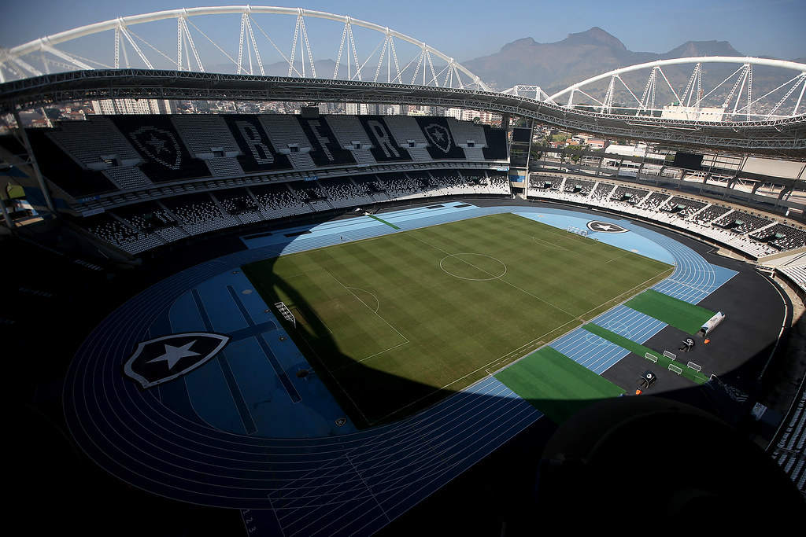

Botafogo Futebol e Regatas
Casa do botafogo
O Estádio Olímpico Nilton Santos, popularmente chamado como Engenhão, é um estádio poliesportivo que está no antigo terreno da Rede Ferroviária Federal, em Engenho de Dentro, na cidade do Rio de Janeiro e pertencente a Prefeitura Municipal do Rio de Janeiro, cedido ao Botafogo de Futebol e Regatas, seu dono. O estádio foi inaugurado em 30 de junho de 2007.
